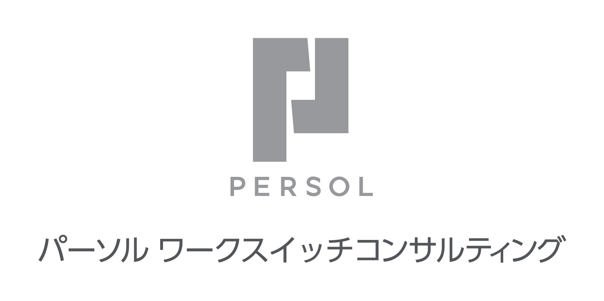

プラチナ協賛
ゴールド協賛

【お申し込み受付を終了しました】
デジタル技術を活用した現場の革新で人手不足問題の解決と
サービスバリュー向上を両立し国際競争力のある日本企業へ
新型コロナウィルス感染症の影響で長らく制限を受けていた人々の動きが再開し、街に活気が戻りつつある一方で、日本の産業界は2つの大きな環境変化に直面しています。 一つ目は人材不足の深刻化です。特に製造業では過去20年間で就業者数が157万人減少しており、 人材確保のための「環境づくり」、「業務の自動化 /効率化」、「技能承継」などの問題解決が急務となっています。
もうひとつの課題はデジタルトランスフォーメーション（DX）による現場の革新です。従来のアナログ型の現場改善を改め、入口から出口までのプロセス全体をデジタル活用によってトランスフォーメーションできるかが今後の成長の鍵となります。また、SX/GXへの対応が強く求められる今日では、DX推進による現場革新は大企業だけでなく中小企業も含めたサプライチェーン全体が真正面から取り組まなければならない重要課題となってきています。 本セミナーイベントでは、最新技術活用によって現場を革新させるためのヒントが得られる事例や有識者の講演をご用意します。この企画を通じて皆様のDX推進活動の一助となれば幸いです。
日経BP 総合研究所 イノベーションICTラボ 所長
大和田尚孝
催事終了後に主催アンケートがございます。
ご回答頂きました方の中から抽選で100名様に
「Amazonギフト券（1,000円分）」をプレゼントさせて頂きます。
*「Amazonギフト券（1,000円分）」は催事終了後の主催者アンケートへご回答頂きました方の中から抽選で100名様に後日ご登録のメールアドレスにてお送りさせて頂きます。
* お申し込みは、お一人様につき一回でお願いいたします。
* Amazon.co.jpは、本プロモーションのスポンサーではありません。
* Amazon、Amazon.co.jp およびそれらのロゴはAmazon.com, Inc. またはその関連会社の商標です。
名 称 |
現場DX×TECHカンファレンス 2023 Autumn |
|---|---|
日 時 |
10月5日（木）13：00～17：10（予定） |
会 場 |
オンラインセミナー |
主 催 |
日経BP 総合研究所 イノベーションICTラボ |
協 賛 |
アデコ、 レイヤーズ・コンサルティング、 日本マイクロソフト、 パーソルワークスイッチコンサルティング （旧社名：パーソルプロセス＆テクノロジー）、 サテライトオフィス （社名ABC順） |
協 力 |
日経クロステック、 日経ビジネス電子版、 日経ビジネス |
受講料 |
無料（事前登録制） ※視聴数には上限がございます。お早めにご登録ください。 |
【お申し込み受付を終了しました】
■Webセミナー【ライブ配信】配信ご受講に際し、以下の事項に同意ください。
1. 視聴に必要なURLは、登録完了メールでご確認ください。
URLはセミナーに参加する方のみ利用可能とし、再配布を禁止します。
2. 受講者は、動画を録画・キャプチャーすることは一切できません。
もし、発見した場合、事務局は削除を要求できることとします。
また、SNSなどへのアップも禁止します。
3. セミナーの内容や受講者の個人情報などはセミナー内のみとし、口外しないでください。
4. システムトラブルなどにより、画像・音声に乱れが生じた場合も対応出来かねますので、ご自身でご調整ください。
5. 配信中、異常と思われる接続を発見した場合、予告なく切断することがあります。